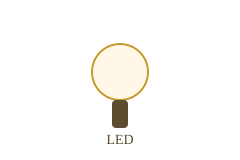

Hardware
Mapa de pines — Arduino Uno
El ATmega328P expone tres grupos de pines. Conocerlos es el primer paso antes de conectar cualquier componente.
Pines 0 – 13
Entrada o salida digital. Cada pin maneja señales de 0V (LOW)
o 5V (HIGH). Se configuran con pinMode().
- Pines 3, 5, 6, 9, 10, 11 soportan PWM (señal analógica simulada, marcados con ~)
- Pines 0 (RX) y 1 (TX) reservados para comunicación serial
- Pin 13 tiene LED integrado en la placa
- Corriente máxima por pin: 40 mA
Pines A0 – A5
Entradas analógicas con conversor ADC de 10 bits integrado. Leen voltajes entre 0V y 5V y los mapean a un valor de 0 a 1023.
- Resolución: 10 bits → 1024 niveles de lectura
- Velocidad de conversión: ~10,000 lecturas por segundo
- Lectura con
analogRead(A0) - Usos: potenciómetros, sensores de temperatura, luz (LDR)
Pines de alimentación
Distribuyen energía al circuito externo. Siempre verificar voltaje y corriente antes de conectar componentes.

Laboratorio
Ejemplo de código — Blink con Serial
El "Hola Mundo" del hardware embebido: control del LED integrado y monitoreo por puerto serial.
// Arquitectura Harvard/RISC — ATmega328P
const int ledPin = 13; // Pin digital con LED integrado
void setup() {
// setup() se ejecuta UNA vez al encender o resetear
pinMode(ledPin, OUTPUT); // Configura pin 13 como salida digital
Serial.begin(9600); // Inicia comunicación serial a 9600 bps
}
void loop() {
// loop() se repite indefinidamente — simula el ciclo de máquina
digitalWrite(ledPin, HIGH); // Envía 5V al pin (LED encendido)
Serial.println("LED: Encendido"); // Envía string por puerto serial
delay(1000); // Pausa 1000 ms
digitalWrite(ledPin, LOW); // Envía 0V al pin (LED apagado)
Serial.println("LED: Apagado");
delay(1000);
}
Análisis — setup()
Se ejecuta una sola vez. Equivale a la fase de inicialización del sistema operativo: configura registros, establece modos de pin y levanta los periféricos necesarios.
pinMode(13, OUTPUT)escribe en el registro DDR del puerto B del ATmegaSerial.begin(9600)inicializa el USART interno con 9600 baudios
Análisis — loop()
Se ejecuta infinitamente. Replica el ciclo fetch-decode-execute del microprocesador: el programa principal que nunca termina mientras haya energía.
digitalWrite()escribe 1 o 0 en el registro PORT del ATmegadelay(1000)bloquea la CPU con un ciclo de espera de 1 segundoSerial.println()transmite bytes por el USART hacia el monitor serial
Arquitectura interna
¿Por qué Arduino es Harvard y no Von Neumann?
El ATmega328P usa buses separados para instrucciones y datos. Esto lo diferencia del modelo clásico visto en EMU8086.
Arquitectura Harvard
El ATmega328P mantiene memoria Flash separada de la RAM. El bus de programa y el bus de datos son independientes: la CPU puede leer la próxima instrucción mientras procesa datos del ciclo anterior.
- 32 KB Flash — almacena el programa (.ino compilado)
- 2 KB SRAM — variables en tiempo de ejecución
- 1 KB EEPROM — almacenamiento no volátil de datos
Harvard vs Von Neumann
| Aspecto | Von Neumann (8086) | Harvard (ATmega) |
|---|---|---|
| Memoria | Unificada | Separada (Flash / SRAM) |
| Bus | Compartido | Buses independientes |
| Cuello de botella | Sí — bus único | No — acceso paralelo |
| Complejidad | Menor | Mayor hardware |
| Uso típico | Propósito general | Sistemas embebidos |
Programación en Arduino
Arduino se programa en C/C++ a través del IDE oficial o entornos como PlatformIO.
El compilador avr-gcc traduce el código a bytecode para el ATmega,
que se sube a la Flash vía USB usando el bootloader integrado.
El flujo es: escribir el sketch → compilar con avr-gcc → subir por USB al bootloader →
el ATmega ejecuta el binario desde Flash. Cada upload sobreescribe
los 32 KB de programa disponibles.